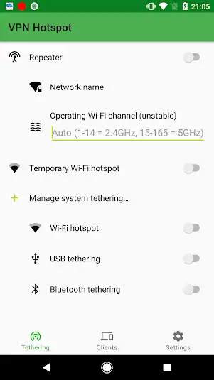
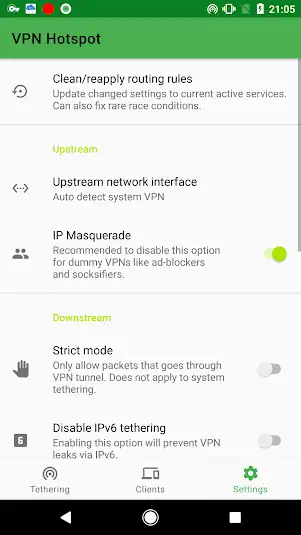

Connecting things to your VPN made simple. Share your VPN connection over hotspot/system tethering or repeater. (root required) This app is useful for: * Connecting things that don't support VPN like Chromecasts behind corporate firewalls; * Setting up gapps behind corporate firewalls; * Connecting
SHA-256: a72518537ed05ea4c77f228a1487ccc885402fd0c175302bda2b549332371cd7


تطبيقات تانية لنفس المطوّر (3)
More apps from this developer: be.mygod
امسح الكود لفتح صفحة التطبيق
Scan to open this app page
لو كنز مش متثبت عندك: نزّل متجر كنز.
Not installed? Get the Kanz store.